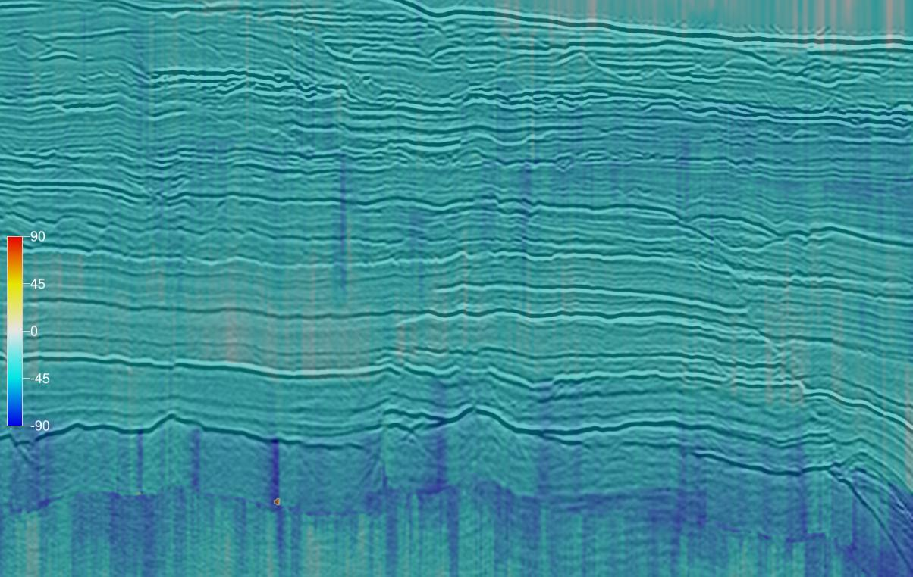
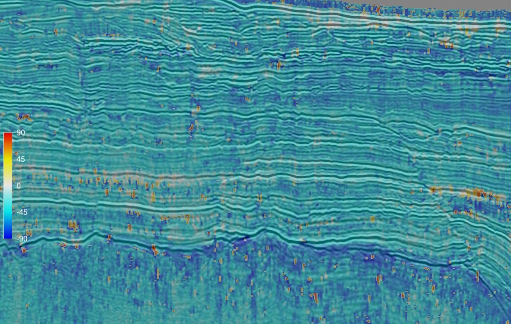
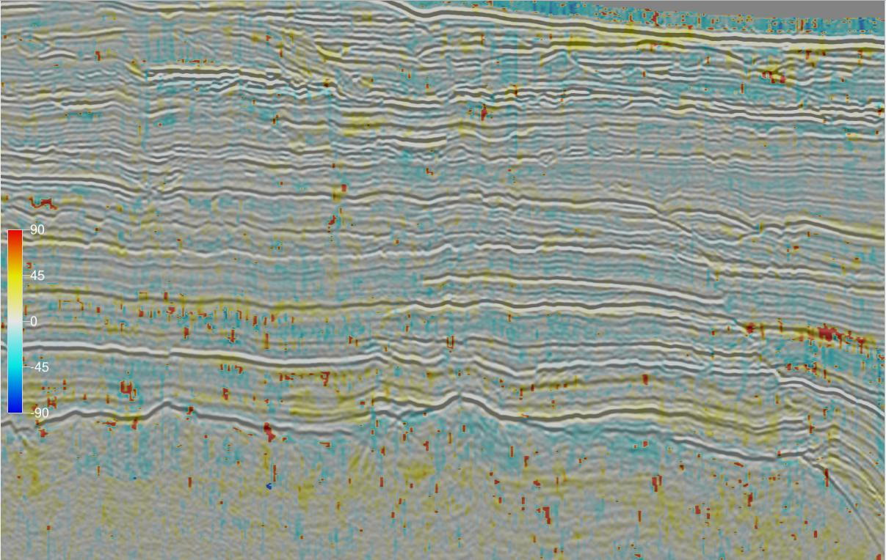
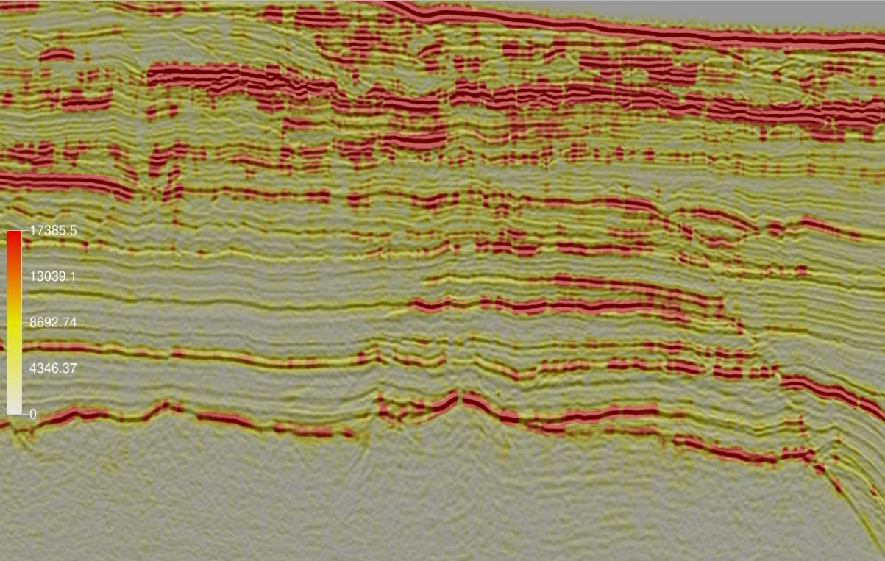
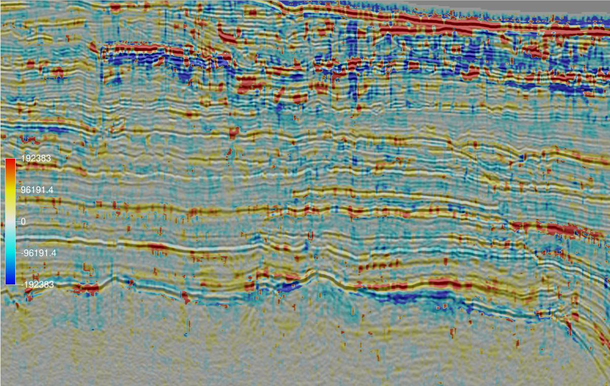
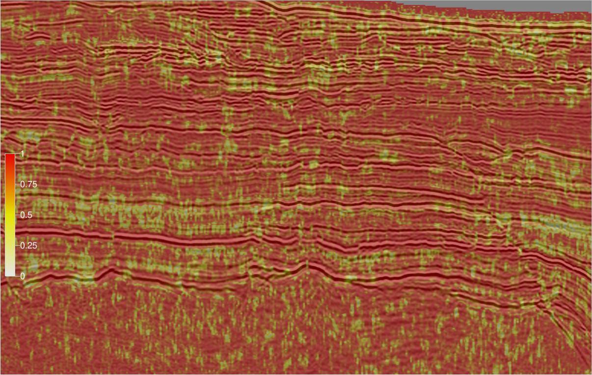

AVOPolarAttrib
Categories:
This attribute plugin for the open source seismic interpretation platform OpendTect calculates 6 attributes derived from AVO Polarization in the AVO Intercept-Gradient crossplot as described by Mahob and Castagna (2003).
Description
The intercept-gradient crossplot is widely used for amplitude-variation-with-offset (AVO) analysis in hydrocarbon exploration. The intercept is the zero offset or normal incidence reflection amplitude/coefficient of an event while the gradient is the change in reflection amplitude/coefficient with offset or incidence angle. Some authors refer to intercept as A or P and gradient as B or G. Traditional methods of AVO interpretation focus on individual sample points in isolation essentially treating them as reflection coefficients. Keho etal (2001) observed that this approach ignores the seismic wavelet. Convolving a seismic reflection coefficient with a typical seismic wavelet produces a series of points spread across all 4 quadrants of the AVO crossplot. Further distortions are introduced by residual time shifts across offsets and NMO stretch. Keho etal (2001) proposed analysing the AVO crossplot for small time windows of 0.5-1 times the wavelet wavelength as hodograms using the polarization angle as a key measure. Mahob and Castagna (2003) subsequently extended the analysis with a number of other measures to describe the hodogram.

Example AVO hodogram crossplot for a 36 millisec TWT window
This plugin calculates the 6 attributes (Background Polarization Angle, Event Polarization Angle, Polarization Angle Difference, Strength, Polarization Product and Quality) defined by Mahob and Castagna (2003). The parameters are estimated by eigendecomposition of the covariance matrix for the intercept-gradient crossplot.
| EXAMPLE | ATTRIBUTE |
|---|---|
|  | Background Polarization AnglePolarization Angle for all AVO crossplot points over a user specified time/depth window and volume of traces. The polarization angle is the orientation of the largest eigenvector relative to the positive intercept axis and varies from -90 to 90 degrees. |
|  | Event Polarization AnglePolarization Angle for AVO crossplot points in the user specified event time/depth window. Recommend using 0.5-1 times the wavelength. The polarization angle is the orientation of the largest eigenvector relative to the positive intercept axis and varies from -90 to 90 degrees. |
|  | Polarization Angle DifferenceThe difference between the event and background polarization angles. |
|  | StrengthThe Mahob and Castagna measure of the distance of the hodogram points from the origin within the event time/depth window. |
|  | Polarization ProductThe product of the Strength and Polarization Angle Difference attributes. |
|  | QualityThis is the ratio of the eigenvalue difference to the eigenvalue sum. It is a measure of the linearity of the points in the intercept-gradient crossplot. It ranges from 0 to 1 with higher values indicating the analysis points have a more linear hodogram and more reliable results. |
Input Parameters
These attributes have 3 required parameters and 3 extra parameters that may be required depending on the attribute being calculated:
| NAME | DESCRIPTION |
|---|---|
| Intercept | The attribute volume to use as the zero offset or normal incidence reflection amplitude coefficient. If no intercept volume is available a near angle or offset stack can be used as an alternative. |
| Gradient | The attribute volume to use as the change in reflection amplitude/coefficient with offset at normal incidence. If no gradient volume is available, the difference between amplitudes on far and near angle or offset stacks can be used as an alternative. |
| Output | The attribute to calculate. There is a choice of Background Polarization Angle, Event Polarization Angle, Polarization Angle Difference, Strength, Polarization Product or Quality. |
| Background time/depth gate (Optional) | The time/depth gate used to estimate the Background Polarization Angle. Only required for the Background Polarization Angle, Polarization Angle Difference and Polarization Product attributes. |
| Stepout (Optional) | The extent of the trace volume used to estimate the Background Polarization Angle. Only required for the Background Polarization Angle, Polarization Angle Difference and Polarization Product attributes. |
| Event time/depth gate (Optional) | The time/depth gate used to estimate the Event Polarization Angle. Required for the Event Polarization, Polarization Angle Difference, Polarization Product and Quality attributes. |

AVO Polarization Attribute Plugin input parameters
Feedback
Was this page helpful?
Glad to hear it! Please tell us how we can improve.
Sorry to hear that. Please tell us how we can improve.